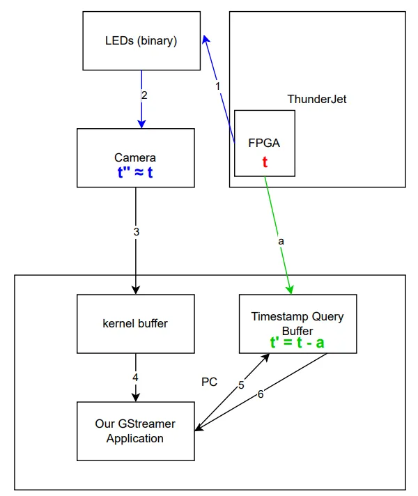

Camera Latency
We conducted experiments to evaluate the latency in our camera system. Our results indicate that most timestamp discrepancies fall within approximately \(5.314\, \text{ms}\). This is well within the frame duration of cameras operating below \(188\, \text{fps}\) (roughly \(5.32\, \text{ms}\) per frame), ensuring that neural data remains correctly aligned with the corresponding video frame even if a slight latency error occurs.
Experiment Setup
-
High-Speed Camera:
Operates at \(596\, \text{fps}\), which allows us to sample the LED signal at \(596\, \text{Hz}\). -
LEDs:
Used to indicate the FPGA timestamp. -
ThorVision Software Stack:
Employed for recording video frames and saving the corresponding XDAQ timestamp in each frame.
Methodology
The system's total latency is measured from the FPGA to the Timestamp Query Buffer. The diagrams below illustrate the propagation pipeline and the step-by-step calculation:

Latency Calculation Steps
-
Neglecting Initial Delays:
We assume that the delays in the initial stages (steps 1 and 2 in the pipeline) are negligible. Therefore, we approximate:\[ t'' \approx t \] -
Adjusting for Offset:
The query buffer timestamp is offset by a delay \(a\). In other words:\[ t' = t - a \] -
Measurement Process:
- Timestamp Difference: Measure the difference between the new query buffer timestamp and the old FPGA LED timestamp:
\[ \Delta t = t^{\prime}_{\text{new}} - t^{\prime\prime}_{\text{old}} \]- Roundtrip Delay: Independently, determine the roundtrip delay, which corresponds to \(2a\). $$ \text{Roundtrip Delay} = 2a $$
Total Latency Calculation:
The combined latency can then be expressed as:
$$
Latency = \Delta t + a
$$
The second diagram provides further details on these steps:

Results
- Measured Timestamp Difference (\(t'_{\text{new}} - t''_{\text{old}}\)):
- Upper Bound: \(5.12\, \text{ms}\)
- Average: \(2.94\, \text{ms}\)
- Offset Value (\(a\)):
- Maximum: \(a \leq 0.194\, \text{ms}\)
- Calculated Latency:
- Upper Bound: $$ \text{Latency}_{\text{upper}} = 5.12\, \text{ms} + 0.194\, \text{ms} = 5.314\, \text{ms} $$
- Average: $$ \text{Latency}_{\text{avg}} = 2.94\, \text{ms} + 0.194\, \text{ms} = 3.134\, \text{ms} $$
Conclusion
For optimal performance, it is recommended that your camera operates at or below \(188\, \text{fps}\). This ensures that the frame duration comfortably accommodates the measured latency margin, thereby maintaining reliable synchronization between video frames and neural data.